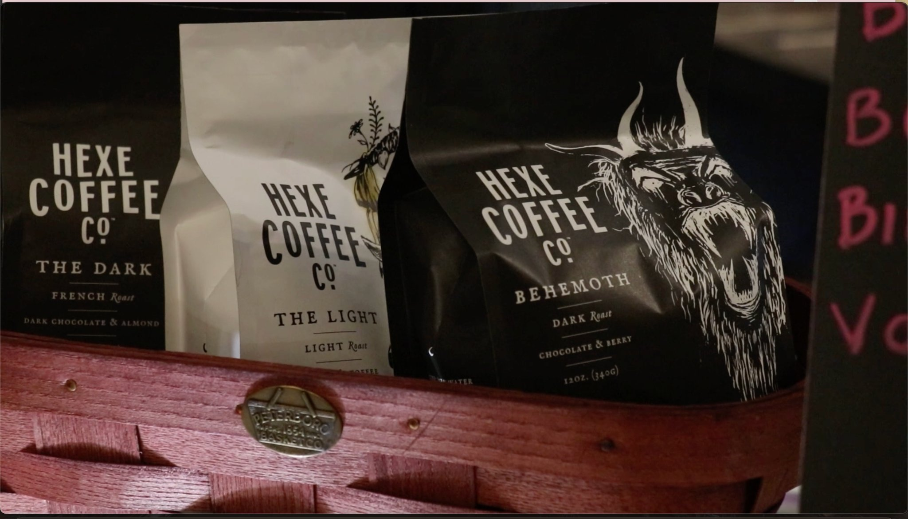
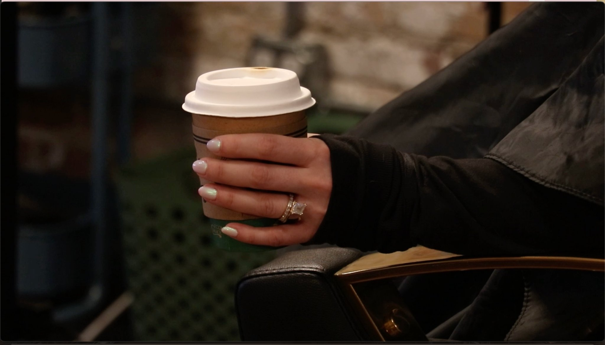
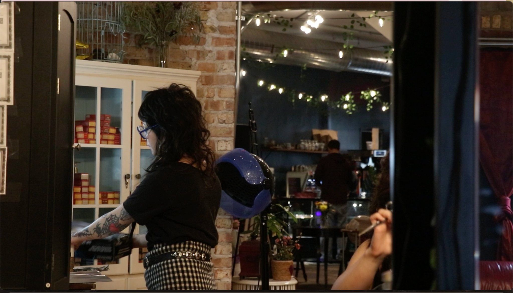

Scissor and Fork, a new salon and café in Irving Park is already making an impact on the neighborhood just two weeks after opening its doors. The space is decorated with plants, candles, and artwork. All the furniture is thrifted, and the smell of incense helps create a cozy environment.
The business combines alternative hairstyling with locally sourced coffee, creating what customers say feels like a welcoming and unique community space. Plus, their cafe features a wide variety of drinks that often come with fun names like “gimmie gimmie!”

“I’ve had people come in just saying, ‘Thank you for being here, we needed this.’”
“I’ve had people come in just saying, ‘Thank you for being here, we needed this,’” owner Ash Grant said. “Hearing that from someone who’s lived here longer than I have is so validating, and I’m so grateful for it.” Grant added that she plans on hosting many community events in the near future. One of the events is a Dungeons and Dragons night.
Whether customers are looking for a simple trim or a bold new look, stylists at the salon specialize in a wide range of styles.
“I would definitely consider it an alternative salon,” stylist Nayeli Gonzalez said. “A lot of my clients are here to do fun hair colors like pink or super bright blues, or mullets and shags.” Gonzalez has been a hair stylist for 5 years and says punk hair is her favorite to cut and style.

The café inside the salon also emphasizes supporting local businesses. The coffee served comes from Hexe Coffee, a roaster based in the neighborhood. The cafe also features pastries and donuts that are quickly becoming local favorites.
“The coffee is amazing,” said customer Paul Harris. “They’re using Hexe Coffee, which I found out is actually roasted here in the neighborhood. Keeping everything really centralized and local to the neighborhood as much as possible is a really wonderful ethic.”
For nearby residents, the location has quickly become a convenient gathering spot. It’s cozy, and the ambience is home-like. This is felt through the furniture, but also through the lighting and the way the staff treats the customers.
“It’s really nice because we live just around the corner,” said customer Michelle Harris. “I was so excited to see a place that I can just walk down the block to. I’ve wanted that so badly.”

Grant said she hopes the business continues to grow into more than just a salon and café by becoming a hub for neighborhood events and activities in the future.